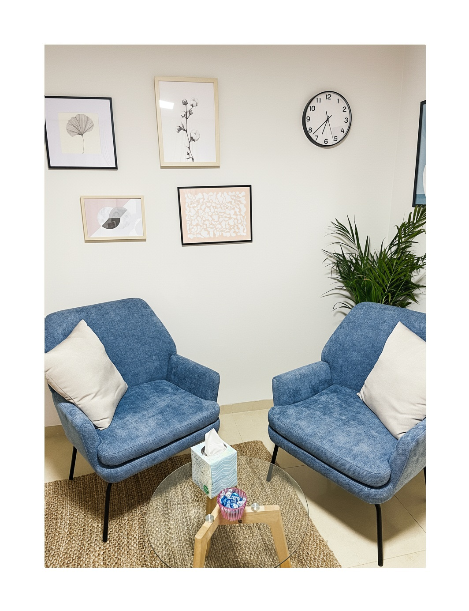

טיפול זוגי ומשפחתי
קצת עליי
שמי שרון סלעי, מטפלת זוגית ומשפחתית, בעלת תואר שני בעבודה סוציאלית קלינית והסמכה בטיפול זוגי ומשפחתי.
סיימתי לימודי תואר ראשון בעבודה סוציאלית בהצטיינות באוניברסיטת חיפה, ותואר שני בעבודה סוציאלית אינטגרטיבית באוניברסיטת תל אביב. הנני מוסמכת כמטפלת זוגית ומשפחתית מטעם האגודה הישראלית לטיפול זוגי ומשפחתי, ומוכרת כספקית של משרד הביטחון והביטוח הלאומי.
כאם לשלושה ילדים וכאישה נשואה, אני מבינה מקרוב את המורכבות, האתגרים והיופי הטמונים במערכות יחסים משפחתיות וזוגיות.
במהלך השנים צברתי ניסיון רב בעבודתי במגזר הציבורי והפרטי בליווי תהליכי שינוי ושיפור מערכות יחסים.
גישתי הטיפולית
אני מאמינה שקשרים בין אנשים הם מהותיים להרגשת רווחה ולסיפוק בחיים. הנני נרגשת כל פעם מחדש לראות איך אנשים, זוגות ומשפחות מגלים מחדש את הכוחות שלהם, מצליחים לדבר את הקול הפנימי שלהם בביטחון ובלב פתוח, ויוצרים מרחב של הבנה, אמון ותקשורת פתוחה.
כמטפלת, אני מאמינה בגישה אינטגרטיבית המשלבת גישות טיפוליות שונות, על מנת להתאים את הטיפול לצרכים הייחודיים של כל פרט, זוג או משפחה. אני שואפת ליצור סביבה בטוחה שבה בני הזוג או בני המשפחה ירגישו חופשיים לבטא את רגשותיהם ומחשבותיהם.
במטרה להבטיח שהתהליך הטיפולי יהיה אפקטיבי ומועיל ככל האפשר, נשלב שיחות שבהן נרחיב את ההבנה של הדינמיקה הזוגית, המשפחתית והאישית, לצד שימת דגש על מתן כלים יישומיים לפתרון קונפליקטים ופיתוח מיומנויות תקשורת.
אני כאן כדי ללוות אתכם במסע שלכם, לעזור לכם לנווט דרך קשיים, לחזק את הקשרים ולבנות מערכות יחסים בריאות ומספקות המאפשרות תיקון, שינוי וצמיחה.
תחומי טיפול
תיאום פגישה ופרטים נוספים

המפגשים מתקיימים בקליניקה בזכרון יעקב בסביבה שקטה ונעימה. כמו כן, ניתן להיפגש און-ליין, תוך הקפדה על פרטיות מוחלטת.
מוזמנים ליצור איתי קשר לכל שאלה או לתיאום פגישה:
בטלפון - 0544925259
בדוא"ל – sharonsali1974@gmail.com
מילים מהקליניקה
"זכינו לקבל את הליווי של שרון בתהליך זוגי משמעותי וחיובי. לאורך המפגשים הפגינה רגישות, הקשבה עמוקה, הבנה מעמיקה ונתנה לנו כלים פרקטיים ששיפרו את התקשורת והחיבור בינינו."
"המקצועיות, הסבלנות והגישה האמפתית שלך יצרו עבורנו מרחב בטוח לשתף ולקבל, והוביל לצמיחה ושינוי אמיתי. אנו מודים לך מקרב לב על התרומה המשמעותית לחיינו."
"באמת שאין מספיק מילים להודות לך. תודה על שאת תמיד, אבל תמיד, כאן בשביל המשפחה שלנו, בכל ההתלבטויות, הניסיונות, ההצלחות והנפילות. תודה שאת לא מתייאשת. אין הרבה אנשים שאנו חבים להם כל כך הרבה. אנו מודים לך מקרב לב על התרומה המשמעותית לחיינו."
"תודה שהיית לנו עוגן בתקופה של חוסר יציבות. השיחות איתך, והשאלות המיוחדות שלך, הכניסו הרבה אוויר וצבעים חדשים למציאות שלנו."
"האופן שבו התבוננת בנו היה מחזק ומאחד. שמחים ומודים מאד על המפגש איתך."
"תודה רבה שרון! מעריכה מאד את הנתינה שלך כלפי בתקופה הזאת. מאחלת לך שתמשיכי בשליחות שלך לעזור לאנשים לצלוח משברים - ברגישות, בהקשבה אמיתית ומכל הלב."
שאלות נפוצות
כמה זמן נמשך טיפול זוגי/משפחתי?
משך הטיפול הוא אינדיבידואלי ותלוי במורכבות הקשיים, במטרות שהוגדרו ובקצב ההתקדמות שלכם. בתחילת הדרך נגדיר יחד מטרות ברורות, ונעקוב אחר ההתקדמות באופן שוטף.
האם את מטפלת גם במקרים של קשיים עם ילדים או מתבגרים?
בהחלט. קשיים של ילדים ומתבגרים משפיעים על כל המשפחה, ולכן הטיפול המשפחתי יכלול התייחסות מעמיקה גם לאתגרים אלו. נבין ביחד את מקור הקשיים, נפתח כלים יעילים להתמודדות, ונחזק את התקשורת והתמיכה בתוך המשפחה.
כיצד מתנהלת פגישת הייעוץ הראשונה?
פגישת הייעוץ הראשונה היא הזדמנות להכיר, להבין את הקשיים שעמם אתם מתמודדים, ולהגדיר יחד את המטרות של הטיפול. נשוחח על ההיסטוריה של הקשר/המשפחה, על הציפיות שלכם מהטיפול, ואני אסביר על הגישה הטיפולית שלי ועל אופן העבודה. זו גם הזדמנות עבורכם לשאול כל שאלה שיש לכם, כדי לוודא שאתם מרגישים בנוח ובטוחים להמשיך בתהליך.
מתי כדאי לפנות לטיפול זוגי/משפחתי?
אין צורך לחכות למשבר גדול. פנייה לטיפול יכולה להיות מועילה במגוון מצבים: קשיים בתקשורת, קונפליקטים חוזרים, שינויים משמעותיים בחיים (כמו לידת ילד, מעבר דירה, שינוי תעסוקתי), התמודדות עם גירושין, זוגיות פרק ב', קשיים ביחסים עם ילדים, או פשוט רצון לחזק את הקשר ולשפר את איכות החיים המשותפת. אני מאמינה שטיפול הוא כלי לצמיחה והתפתחות, לא רק לפתרון בעיות.